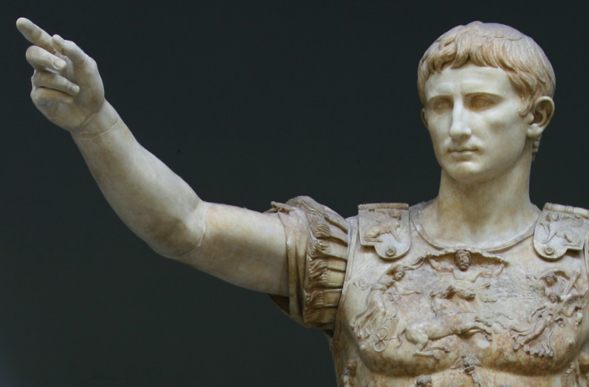
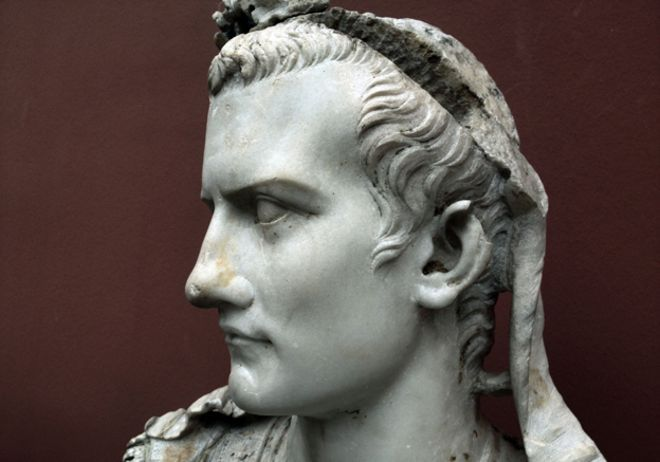
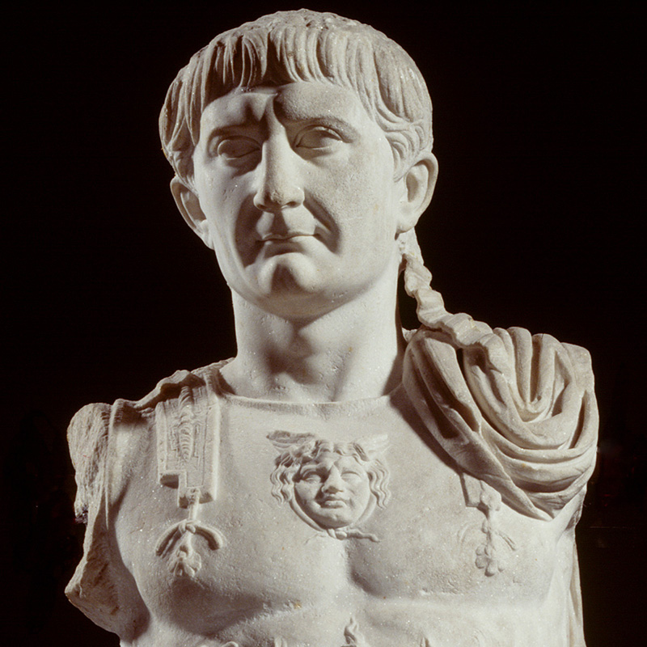
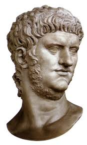

Rome heeft vele keizers gehad en in dit hoofdstuk zullen we enkelek kort behandelen
We beginnen bij de eerste keizer van het Romeinse Rijk: Augustus.
Zijn echte naam was octavianus maar kreeg later de bijnaam Augustus.
Julius Ceasar wilde dat octavianus (de neef van Julius Ceasar) zijn opvolger werd.
Na de dood van Julius Ceasar werd het romeinse rijk verdeeld. Augustus had uiteindelijk de moordernaar van zijn oom kunnen samen met Marcus Antonius gedood
maar er kwam echter nog een grotere oorlog voor hem.
Er ontstond een grote burgeroorlog in het verdeelde Romeinse Rijk.
Het Romeinse Rijk was nu in drie delen verdeeld. Lepidus regeerde over huidig spanje, Marcus Antonius vooral de gebieden in afrika en het midden-oosten en Octavianus regeerde over de rest.
Nadat Octavianus de gebieden van Lepidus aan zijn kant wist te krijgen, ontstond er een oorlog tussen Octavianus' Rome en Marcus Antonius' Rome.
Na vele gevechten lukte het Augusten om de oorlog te winnen. Hij benoemde zich tot keizer van Rome en bracht vrede naar het Romeinse Rijk.
dit werd het Pax Romana genoemd.
Als eer aan zijn oom, Julius Ceasar, maakte Augustus van de naam Ceasar ook een titel, de titel van keizer.

Keizer Caligula, de opvolger van Tiberius, was in het begin van zijn carrière als keizer zeer geliefd.
Later heeft Caligula zeer vreemde dingen gedaan waardoor hij bekend staat als een gek.
Één voorbeeld daarvan was toen hij had geprobeerd zijn paard het senaat in te krijgen.
Hoewel dit heel raar klinkt, is het hem toch gelukt en kreeg zijn paard een positie in de senaat
Een ander voorbeeld van zijn dommigheid was toen hij de oorlog verklaarde aan Neptunes.
Hij liet zijn legers naar de zee marcheren en beval zijn legers om de zee te steken.
Nadat zijn legers de zee hadden gestoken namen ze schelpen van de stranden mee als oorlogsbuit.
De oorzaak van zijn waanzin is waarschijnlijk ontstaan doordat er veel incest in zijn familie was.
Hijzelf kan dus ook ontstaan zijn uit incest...
Caligula had ook problemen met de Preatoria. de officiele wacht van de keizers.
Hierdoor ontstond een complot om Caligula te vermoorden en dit werd uiteindelijk ook zijn dood.

Trajanus was één van de vijf goede keizers van Rome.
Tijdens zijn regeerperiode was Rome het grootst.
In het begin van zijn periode had Trajanus veel land veroverd, zo had hij een oorlog gewonnen met Dacia.
Hij liet een brug bouwen over de rivier de Donau, en veroverde geheel Dacia.
Omdat de leider van Dacia in opstand kwam en omringende gebieden tegen de romeinen wilden keren,
Vermoorde Trajanus de gehele bevolking van Dacia en werwoestte de hoofdstad, Sarmizegetusa.
Hierna liet Trajanus romeinse kolonisten Dacia bevolken
In Dacia was veel goud te vinden, dus kwamen er vele goudmijnen.
Dit zorgde voor een grote ontwikkeling in de economie van het Romeinse Rijk.
Echter na zijn veroveringen zorgde Trajanus ook voor een periode van vrede.
In deze periode werde vele nieuwe gebouwen gebouwd zoals het Forum in Rome.

In het begin van zijn heersing, bracht Nero vrede en welvaart.
Echter voordat hij keizer was had hij al de tacticus Britannicus vermoord en zijn moeder verbannen.
Door zijn eerste vijf jaren als Keizer werd hij vergelijken met Augustus, die tot nu toe de beste keizer was.
Het was de goude eeuw van het Romeinse Rijk.
Echter hierna ging het alleen maar bergafwaarts.
In 64 na christus was er een grote brand in Rome en hoewel Nero niet in Rome was,
werd hij er wel van verdacht dat hij het heeft laten gebeuren.
Zo zou hij veel ruimte nodig hebben om een groot nieuwe paleis te bouwen.
in het jaar 66 begon de Joodse Oorlog, wat een opstand was tegen de Romeinen.
Hierdoor ontstond een heftige vervolging van Christenen en Joden.
Nero stond ook bekend om zijn fanatieke christenvervolging.
Hij stierf echter later door vermoedelijk zelfmoord toen de senaat hem kwam arresteren.
